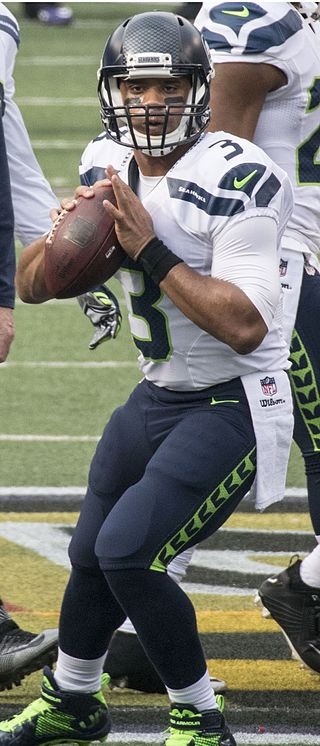

| Player | Passing yards |
|---|---|
| Drew Brees | 46,770 |
| Matt Ryan | 44,830 |
| Phillip Rivers | 44,320 |
| Tom Brady | 43,727 |
| Matthew Stafford | 38,758 |
Drew Brees:
Russell Wilson:
Here's a link to Russell Wilson's wikipedia page for more information on the Seattle Seahawks' passer: Russ's Info
This link leads to some basic information on Tom Brady, now the quarterback for the Tampa Bay Buccaneers: Info on Brady
Tony Romo headed the Cowboys through the 2015 NFL season.
Big Ben quarterbacked the Steelers through all of the 2010s, outside of time missed by injuries.